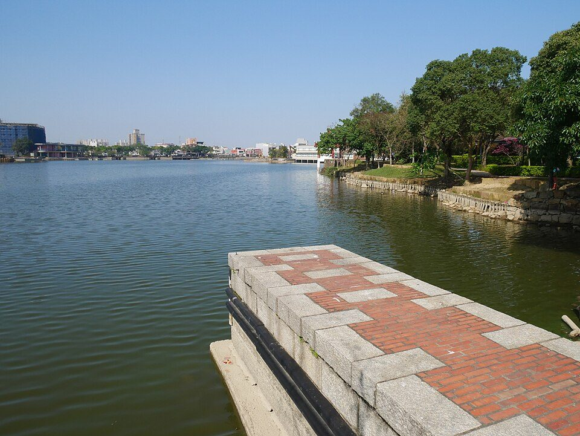

龍潭大池南岸碼頭。龍舟賽與水域活動使大池具有節慶與公共空間意義。
說明龍潭大池如何從灌溉埤塘轉型為龍舟賽、南天宮與地方節慶的文化舞台。

交通部觀光署介紹龍潭大池時，指出大池原本為灌溉而設計，後因湖心南天宮與吊橋形成觀光休憩空間，並以每年龍舟賽聞名。這讓龍潭大池具有「水利設施—宗教地景—地方節慶」三重身份。
報告可以討論：龍舟賽為什麼適合在埤塘舉辦？因為埤塘水面開闊、位置靠近聚落，且水域本來就是地方共同管理的資源。龍舟活動讓水不只是灌溉工具，也成為凝聚社群的媒介。
可直接放進口頭報告。
龍潭因大池得名，大池又因地方信仰、橋梁與龍舟而被重新認識。地名、景觀與節慶互相強化。
划龍舟需要節奏、鼓聲、團隊同步，與客家聚落共同勞動的歷史想像相連。
大型活動會帶來人潮、攤販、垃圾與噪音，也提供環境教育機會。導覽可加入「活動後水域檢查」。